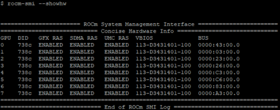
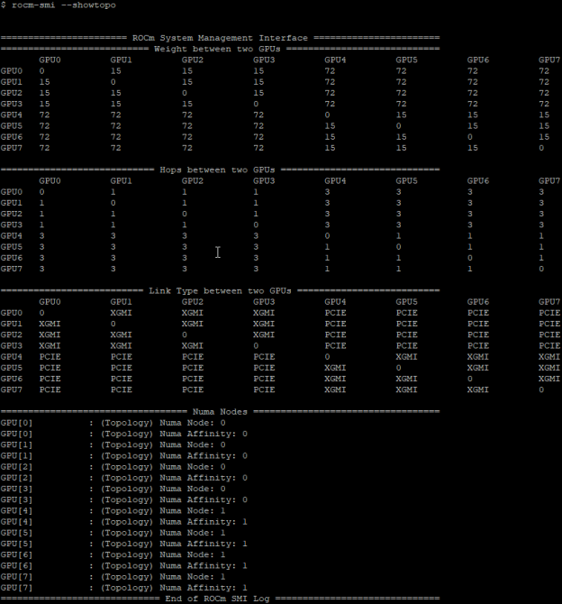
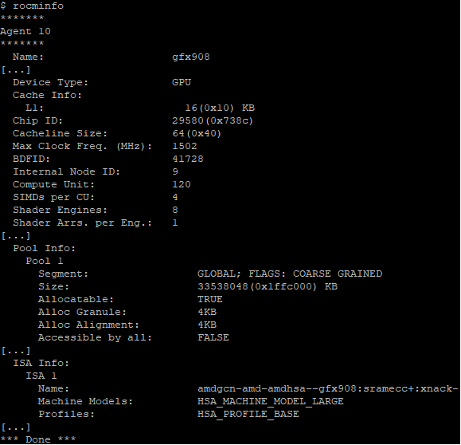
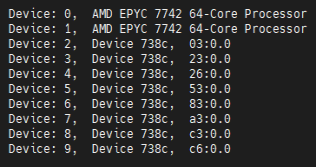
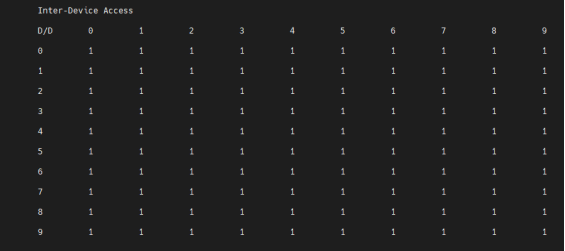
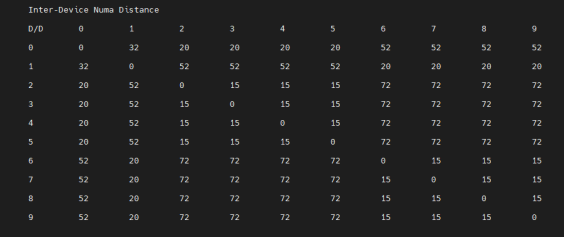

AMD Instinct MI100 system optimization#
2024-10-18
16 min read time
System settings#
This chapter reviews system settings that are required to configure the system for AMD Instinct™ MI100 accelerators and that can improve performance of the GPUs. It is advised to configure the system for best possible host configuration according to the high-performance computing tuning guides for AMD EPYC™ 7002 Series and EPYC™ 7003 Series processors, depending on the processor generation of the system.
In addition to the BIOS settings listed below the following settings (System BIOS settings) will also have to be enacted via the command line (see Operating system settings):
Core C states
AMD-PCI-UTIL (on AMD EPYC™ 7002 series processors)
IOMMU (if needed)
System BIOS settings#
For maximum MI100 GPU performance on systems with AMD EPYC™ 7002 series processors (codename “Rome”) and AMI System BIOS, the following configuration of System BIOS settings has been validated. These settings must be used for the qualification process and should be set as default values for the system BIOS. Analogous settings for other non-AMI System BIOS providers could be set similarly. For systems with Intel processors, some settings may not apply or be available as listed in the following table.
BIOS Setting Location |
Parameter |
Value |
Comments |
|---|---|---|---|
Advanced / PCI Subsystem Settings |
Above 4G Decoding |
Enabled |
GPU Large BAR Support |
AMD CBS / CPU Common Options |
Global C-state Control |
Auto |
Global C-States |
AMD CBS / CPU Common Options |
CCD/Core/Thread Enablement |
Accept |
Global C-States |
AMD CBS / CPU Common Options / Performance |
SMT Control |
Disable |
Global C-States |
AMD CBS / DF Common Options / Memory Addressing |
NUMA nodes per socket |
NPS 1,2,4 |
NUMA Nodes (NPS) |
AMD CBS / DF Common Options / Memory Addressing |
Memory interleaving |
Auto |
Numa Nodes (NPS) |
AMD CBS / DF Common Options / Link |
4-link xGMI max speed |
18 Gbps |
Set AMD CPU xGMI speed to highest rate supported |
AMD CBS / DF Common Options / Link |
3-link xGMI max speed |
18 Gbps |
Set AMD CPU xGMI speed to highest rate supported |
AMD CBS / NBIO Common Options |
IOMMU |
Disable |
|
AMD CBS / NBIO Common Options |
PCIe Ten Bit Tag Support |
Enable |
|
AMD CBS / NBIO Common Options |
Preferred IO |
Manual |
|
AMD CBS / NBIO Common Options |
Preferred IO Bus |
“Use lspci to find pci device id” |
|
AMD CBS / NBIO Common Options |
Enhanced Preferred IO Mode |
Enable |
|
AMD CBS / NBIO Common Options / SMU Common Options |
Determinism Control |
Manual |
|
AMD CBS / NBIO Common Options / SMU Common Options |
Determinism Slider |
Power |
|
AMD CBS / NBIO Common Options / SMU Common Options |
cTDP Control |
Manual |
|
AMD CBS / NBIO Common Options / SMU Common Options |
cTDP |
240 |
|
AMD CBS / NBIO Common Options / SMU Common Options |
Package Power Limit Control |
Manual |
|
AMD CBS / NBIO Common Options / SMU Common Options |
Package Power Limit |
240 |
|
AMD CBS / NBIO Common Options / SMU Common Options |
xGMI Link Width Control |
Manual |
|
AMD CBS / NBIO Common Options / SMU Common Options |
xGMI Force Link Width |
2 |
|
AMD CBS / NBIO Common Options / SMU Common Options |
xGMI Force Link Width Control |
Force |
|
AMD CBS / NBIO Common Options / SMU Common Options |
APBDIS |
1 |
|
AMD CBS / NBIO Common Options / SMU Common Options |
DF C-states |
Auto |
|
AMD CBS / NBIO Common Options / SMU Common Options |
Fixed SOC P-state |
P0 |
|
AMD CBS / UMC Common Options / DDR4 Common Options |
Enforce POR |
Accept |
|
AMD CBS / UMC Common Options / DDR4 Common Options / Enforce POR |
Overclock |
Enabled |
|
AMD CBS / UMC Common Options / DDR4 Common Options / Enforce POR |
Memory Clock Speed |
1600 MHz |
Set to max Memory Speed, if using 3200 MHz DIMMs |
AMD CBS / UMC Common Options / DDR4 Common Options / DRAM Controller Configuration / DRAM Power Options |
Power Down Enable |
Disabled |
RAM Power Down |
AMD CBS / Security |
TSME |
Disabled |
Memory Encryption |
NBIO link clock frequency#
The NBIOs (4x per AMD EPYC™ processor) are the serializers/deserializers (also known as “SerDes”) that convert and prepare the I/O signals for the processor’s 128 external I/O interface lanes (32 per NBIO).
LCLK (short for link clock frequency) controls the link speed of the internal bus that connects the NBIO silicon with the data fabric. All data between the processor and its PCIe lanes flow to the data fabric based on these LCLK frequency settings. The link clock frequency of the NBIO components need to be forced to the maximum frequency for optimal PCIe performance.
For AMD EPYC™ 7002 series processors, this setting cannot be modified via configuration options in the server BIOS alone. Instead, the AMD-IOPM-UTIL (see Section 3.2.3) must be run at every server boot to disable Dynamic Power Management for all PCIe Root Complexes and NBIOs within the system and to lock the logic into the highest performance operational mode.
For AMD EPYC™ 7003 series processors, configuring all NBIOs to be in “Enhanced Preferred I/O” mode is sufficient to enable highest link clock frequency for the NBIO components.
Memory configuration#
For the memory addressing modes, especially the number of NUMA nodes per socket/processor (NPS), the recommended setting is to follow the guidance of the high-performance computing tuning guides for AMD EPYC™ 7002 Series and AMD EPYC™ 7003 Series processors to provide the optimal configuration for host side computation.
If the system is set to one NUMA domain per socket/processor (NPS1), bidirectional copy bandwidth between host memory and GPU memory may be slightly higher (up to about 16% more) than with four NUMA domains per socket processor (NPS4). For memory bandwidth sensitive applications using MPI, NPS4 is recommended. For applications that are not optimized for NUMA locality, NPS1 is the recommended setting.
Operating system settings#
CPU core states - C-states#
There are several core states (C-states) that an AMD EPYC CPU can idle within:
C0: active. This is the active state while running an application.
C1: idle
C2: idle and power gated. This is a deeper sleep state and will have a greater latency when moving back to the C0 state, compared to when the CPU is coming out of C1.
Disabling C2 is important for running with a high performance, low-latency network. To disable power-gating on all cores run the following on Linux systems:
cpupower idle-set -d 2
Note that the cpupower tool must be installed, as it is not part of the base
packages of most Linux® distributions. The package needed varies with the
respective Linux distribution.
sudo apt install linux-tools-common
sudo yum install cpupowerutils
sudo zypper install cpupower
AMD-IOPM-UTIL#
This section applies to AMD EPYC™ 7002 processors to optimize advanced Dynamic Power Management (DPM) in the I/O logic (see NBIO description above) for performance. Certain I/O workloads may benefit from disabling this power management. This utility disables DPM for all PCI-e root complexes in the system and locks the logic into the highest performance operational mode.
Disabling I/O DPM will reduce the latency and/or improve the throughput of low-bandwidth messages for PCI-e InfiniBand NICs and GPUs. Other workloads with low-bandwidth bursty PCI-e I/O characteristics may benefit as well if multiple such PCI-e devices are installed in the system.
The actions of the utility do not persist across reboots. There is no need to change any existing firmware settings when using this utility. The “Preferred I/O” and “Enhanced Preferred I/O” settings should remain unchanged at enabled.
Tip
The recommended method to use the utility is either to create a system
start-up script, for example, a one-shot systemd service unit, or run the
utility when starting up a job scheduler on the system. The installer
packages (see
Power Management Utility) will
create and enable a systemd service unit for you. This service unit is
configured to run in one-shot mode. This means that even when the service
unit runs as expected, the status of the service unit will show inactive.
This is the expected behavior when the utility runs normally. If the service
unit shows failed, the utility did not run as expected. The output in either
case can be shown with the systemctl status command.
Stopping the service unit has no effect since the utility does not leave
anything running. To undo the effects of the utility, disable the service
unit with the systemctl disable command and reboot the system.
The utility does not have any command-line options, and it must be run with super-user permissions.
Systems with 256 CPU threads - IOMMU configuration#
For systems that have 256 logical CPU cores or more (e.g., 64-core AMD EPYC™ 7763 in a dual-socket configuration and SMT enabled), setting the input-output memory management unit (IOMMU) configuration to “disabled” can limit the number of available logical cores to 255. The reason is that the Linux® kernel disables X2APIC in this case and falls back to Advanced Programmable Interrupt Controller (APIC), which can only enumerate a maximum of 255 (logical) cores.
If SMT is enabled by setting “CCD/Core/Thread Enablement > SMT Control” to “enable”, the following steps can be applied to the system to enable all (logical) cores of the system:
In the server BIOS, set IOMMU to “Enabled”.
When configuring the Grub boot loader, add the following argument for the Linux kernel:
iommu=ptUpdate Grub to use the modified configuration:
sudo grub2-mkconfig -o /boot/grub2/grub.cfg
Reboot the system.
Verify IOMMU passthrough mode by inspecting the kernel log via
dmesg:[...] [ 0.000000] Kernel command line: [...] iommu=pt [...]
Once the system is properly configured, ROCm software can be installed.
System management#
For a complete guide on how to install/manage/uninstall ROCm on Linux, refer to Quick-start (Linux). To verify that the installation was successful, refer to the post-install instructions and system tools. Should verification fail, consult the System Debugging Guide.
Hardware verification with ROCm#
The AMD ROCm™ platform ships with tools to query the system structure. To query
the GPU hardware, the rocm-smi command is available. It can show available
GPUs in the system with their device ID and their respective firmware (or VBIOS)
versions:

Another important query is to show the system structure, the localization of the GPUs in the system, and the fabric connections between the system components:

The previous command shows the system structure in four blocks:
The first block of the output shows the distance between the GPUs similar to what the
numactlcommand outputs for the NUMA domains of a system. The weight is a qualitative measure for the “distance” data must travel to reach one GPU from another one. While the values do not carry a special (physical) meaning, the higher the value the more hops are needed to reach the destination from the source GPU.The second block has a matrix for the number of hops required to send data from one GPU to another. For the GPUs in the local hive, this number is one, while for the others it is three (one hop to leave the hive, one hop across the processors, and one hop within the destination hive).
The third block outputs the link types between the GPUs. This can either be “XGMI” for AMD Infinity Fabric™ links or “PCIE” for PCIe Gen4 links.
The fourth block reveals the localization of a GPU with respect to the NUMA organization of the shared memory of the AMD EPYC™ processors.
To query the compute capabilities of the GPU devices, the rocminfo command is
available with the AMD ROCm™ platform. It lists specific details about the GPU
devices, including but not limited to the number of compute units, width of the
SIMD pipelines, memory information, and Instruction Set Architecture:

For a complete list of architecture (LLVM target) names, refer to Linux and Windows support.
Testing inter-device bandwidth#
Hardware verification with ROCm showed the rocm-smi --showtopo command to show
how the system structure and how the GPUs are located and connected in this
structure. For more details, the rocm-bandwidth-test can run benchmarks to
show the effective link bandwidth between the components of the system.
The ROCm Bandwidth Test program can be installed with the following package-manager commands:
sudo apt install rocm-bandwidth-test
sudo yum install rocm-bandwidth-test
sudo zypper install rocm-bandwidth-test
Alternatively, the source code can be downloaded and built from source.
The output will list the available compute devices (CPUs and GPUs):

The output will also show a matrix that contains a “1” if a device can
communicate to another device (CPU and GPU) of the system and it will show the
NUMA distance (similar to rocm-smi):


The output also contains the measured bandwidth for unidirectional and bidirectional transfers between the devices (CPU and GPU):